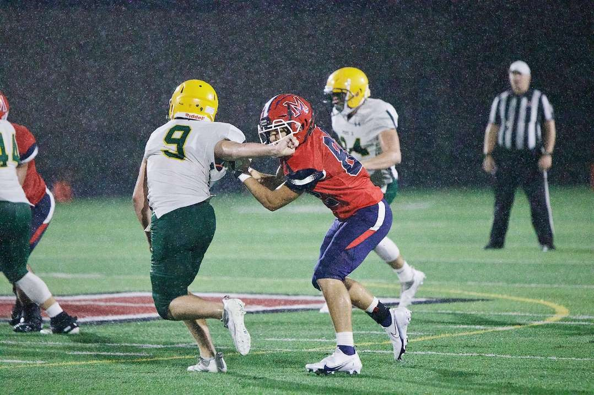

Bryan Zimmerman is a senior at Millard South. After moving here after his mother's divorce four years ago he switched from playing football, basketball, baseball, track and band to concentrating on football and track. Being part of a bigger school and their weightlifting program and also working part time at a gym, Bryan found a love for fitness training and healthy eating. Bryan works with some of the body builders and trainers at his gym to be in the best shape he can be depending on if he is bulking for football or cutting for track. He enjoys spreading the knowledge he has gained to others who are interested in bettering their health and fitness.
Bryan has only a few classes this year as a senior as he finished many of his requirements early on. As such, he is participating in the STEM Career Academy program which offers college credits while also dueling earning additional high school credits. In addition to his part time gym position, he also works part time with an architecture firm and subcontracts with a construction company as part of his internship for the Career Academy program. Bryan is looking forward to furthering his education with the University of Nebraska in the Architecture program.